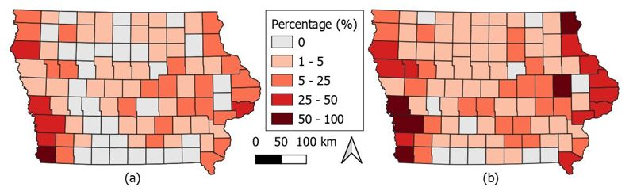
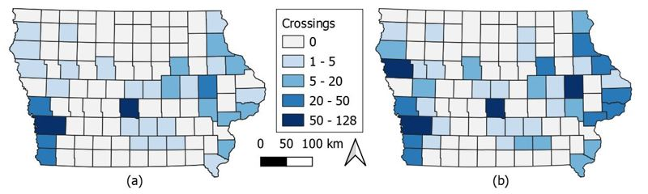
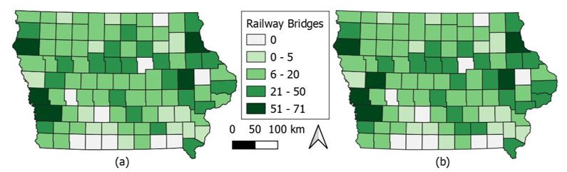

Climate-related dangers, exemplified by events like floods, present a significant risk to human well-being. These potential risks can include significant economic damages, harm to infrastructure, disruption to daily activities, or even the end of life. Understanding the flood risk to critical infrastructure is important to ensuring the resilience and reliability of essential services during disasters. One of those infrastructures is the railroad network, which is a key aspect of providing goods and services in the United States. Due to a lack of railway assessment during flooding within Iowa, this research aims to analyze the railway network, railway bridges, intersection points of rail and public roads (rail crossings), and rail facilities by using 100 and 500 years of flooding at the state level using GIS-based analysis. Also, we have selected the most affected counties to investigate the vulnerability of railway infrastructure to flooding in detail, including railway bridge analysis. During 100-year flooding, results of state-wide analysis indicate that the percentage of impacted railroad length, rail crossings, bridges, and facilities can reach up to 9%, 8%, 58%, and 6%, respectively, whereas during a 500-year flooding scenario, these results reach up to 16%, 14%, 61%, and 13%, respectively. In addition, in the second analysis stage, when we added the depth maps, we observed within the studied counties that in both flood scenarios, about half of the railway bridges in the flood region would become non-functional. Findings from the evaluation of future flood risk to railway infrastructure are crucial for the creation of efficient disaster risk management and sufficient preparation for coping with climate change.
Related Articles
- Alabbad, Y., & Demir, I. (2022). Comprehensive flood vulnerability analysis in urban communities: Iowa case study. International journal of disaster risk reduction, 74, 102955.
DOI: https://doi.org/10.1016/j.ijdrr.2022.102955 - Alabbad, Y., & Demir, I. (2023). Geo-Spatial Analysis of Built-Environment Exposure to Flooding: Iowa Case Study. Available at SSRN 4415317.
DOI: http://dx.doi.org/10.2139/ssrn.4415317 - Alabbad, Y., Yildirim, E., & Demir, I. (2023). A web-based analytical urban flood damage and loss estimation framework. Environmental Modelling & Software, 163, 105670.
DOI: https://doi.org/10.1016/j.envsoft.2023.105670 - Alabbad, Y., Mount, J., Campbell, A. M., & Demir, I. (2021). Assessment of transportation system disruption and accessibility to critical amenities during flooding: Iowa case study. Science of the Total Environment, 793, 148476.
DOI: https://doi.org/10.1016/j.scitotenv.2021.148476 - Yildirim, E., & Demir, I. (2021). An integrated flood risk assessment and mitigation framework: A case study for middle Cedar River Basin, Iowa, US. International Journal of Disaster Risk Reduction, 56, 102113. Computers and Education.
DOI: https://doi.org/10.1016/j.ijdrr.2021.102113 - Yildirim, E., Just, C., & Demir, I. (2022). Flood risk assessment and quantification at the community and property level in the State of Iowa. International Journal of Disaster Risk Reduction, 77, 103106.
DOI: https://doi.org/10.1016/j.ijdrr.2022.103106

The percentage of inundated railroad length per county during 100-yr (a) and 500-yr (b) flood scenarios.

The number of impacted crossings between the railroad and public road per county during 100-yr (a) and 500-yr (b) flood scenario.

The number of railway bridges within the floodplain per county during 100-yr (a) and 500-yr (b) flood scenario.